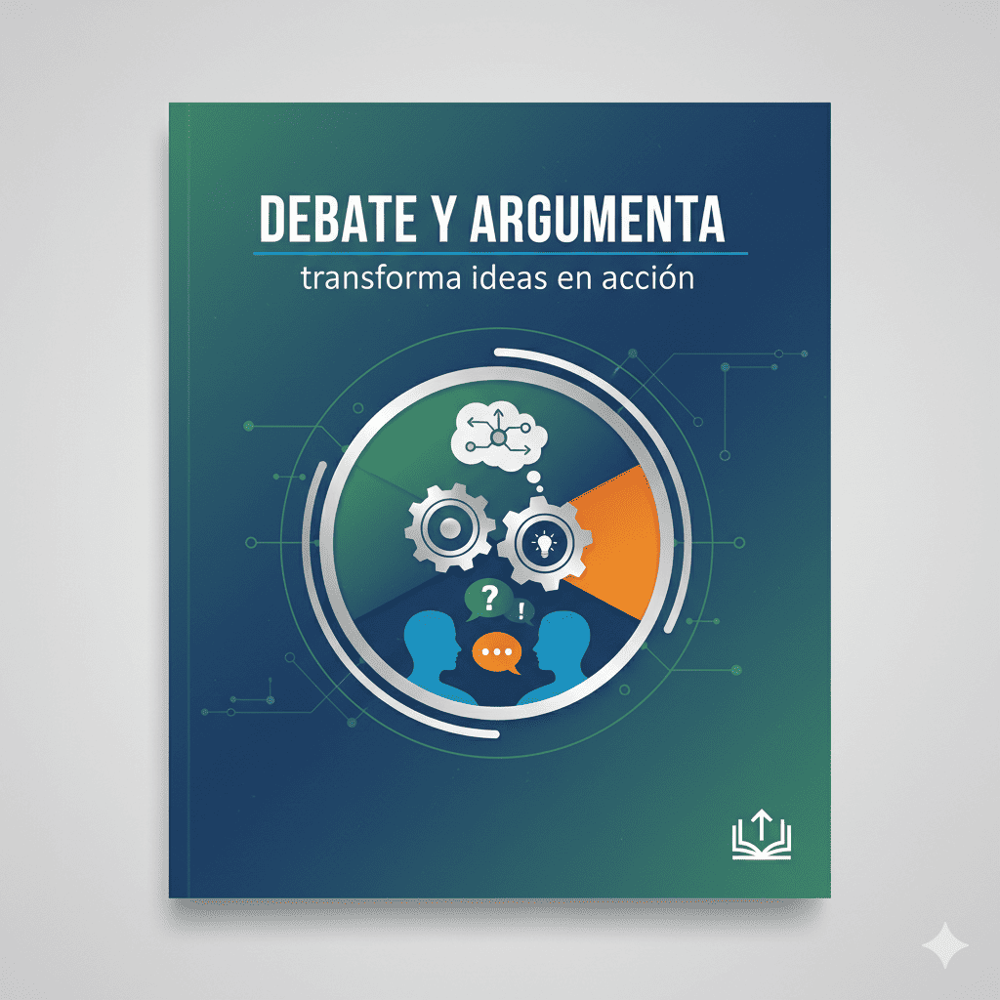

LENGUA CASTELLANA Y LITERATURA II |
||
|
2º de Bachillerato |
Situación de aprendizaje |
|
| Bloque 2: Texto y sentido | ||
| Situación de aprendizaje 6: Debate y argumenta: transforma ideas en acción | ||
2Bac - Situación de aprendizaje 2.6: Texto y sentido: Debate y argumenta: transforma ideas en acción
Situación de aprendizaje 2.6: Debate y argumenta: transforma ideas en acción

La opinión pública se forma en la disputa argumental alrededor de un asunto, no acríticamente en el apoyo o rechazo —plebiscitaria o ingenuamente manipulados—, apoyados en el common sense, de personas.
Habermas, J. (1994/1962). Historia y crítica de la opinión pública: La transformación estructural de la vida pública (A. Doménech, trad.). Editorial Gustavo Gili. p. 103
Obra publicada con Licencia Creative Commons Reconocimiento No comercial Compartir igual 4.0